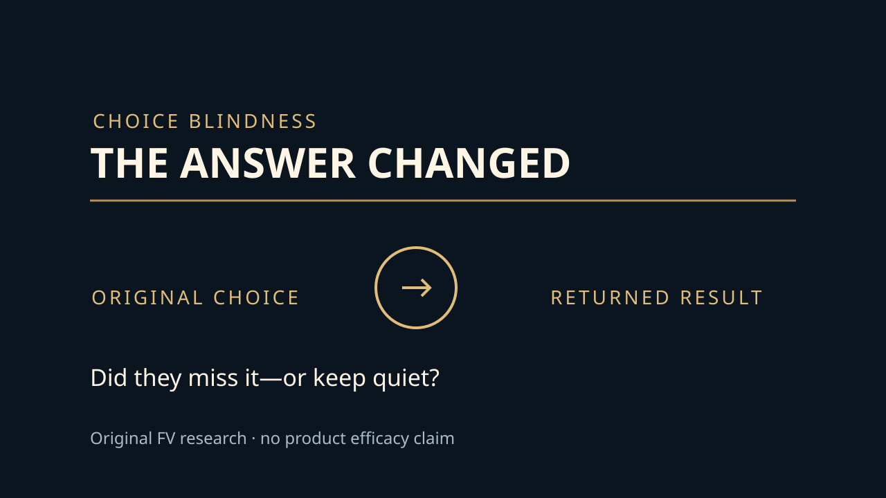

Final Vestige Studios / Mind & Perception / independent buyer guide / UNPUBLISHED
A quieter twelve minutes is not a scientific shortcut.
Zen12 sells a structured audio-based meditation routine. Before deciding whether it belongs in your day, separate what the vendor says is in the files from what research actually establishes about the results.
Picture the difference between two choices made in a rush: an entertaining promise that a recording "meditates for you," and a decision to set aside twelve minutes, compare a few approaches, and keep notes. The second choice can be tested for yourself without first buying a thing. Zen12 might appeal to listeners who like a packaged program rather than assembling their own playlist; whether it creates the promised mental or health effects is a separate scientific question.
Optional 42-second evidence film — concept only
This original poster and timed transcript are complete. There is no hosted film, and no inaccessible, broken or autoplaying video control. A real native video player with captions, poster and lazy loading can be added only after an encoded file, accessibility QA and release approval.

Read the complete 42-second transcript (no video required)
0–7s. You make a choice. The result comes back different.
7–14s. In 2005, experimenters switched the selected face.
14–21s. Some participants gave reasons for the face they received.
21–28s. But silence might not mean the switch went unnoticed.
28–35s. A 2025 study found signs of detection without a report.
35–42s. Evidence first. A good story is not proof of a product.
Caption source: CHOICE_BLINDNESS_42S.vtt. No face images, audio licensing assumptions, scientific exaggerations or autoplay.
What Zen12 says it provides
The format
On its standard About page, Zen12 describes downloadable MP3 audio sessions of twelve minutes, a twelve-level program and four versions per level: relaxation music, guided meditation, white noise and nature sounds.
These are seller-described features, not independently purchased or tested files.
The intended listener
Its sales copy addresses people who want short, convenient meditation sessions, find longer practice difficult, or prefer guidance or sound rather than silence. These are positioning claims—not evidence that the program will work for everyone.
The attention demonstration: two explanations, one outcome
In research on choice blindness, experimenters sometimes substituted a different choice outcome, and participants offered explanations for the outcome shown. More recent 2025 research warns that not reporting a change does not always mean failing to notice it. Before judging a product, write down exactly what you expect it to do, then compare that expectation with a measurable observation. Neither study tested Zen12.
Choose one low-stakes task, such as reading a page quietly for twelve minutes.
Write down the aim and circumstances beforehand. Use a timer; do not buy anything.
Afterward, distinguish "I preferred the experience" from "the audio caused a physiological effect."
One session can inform personal preference, not demonstrate medical efficacy. Stop any audio if uncomfortable. Do not use relaxation audio while driving or operating machinery; the merchant warns against this as well.
What evidence actually says
There is a scientific literature on meditation and brain stimulation, but evidence for a general technique must not be silently transferred to a named commercial recording. A 2023 systematic review of fourteen EEG studies of binaural beats found heterogeneous and inconsistent results (five aligned with entrainment expectations, eight contradicted, one mixed). That review neither tested Zen12 nor establishes its marketing comparison of twelve minutes with an hour of conventional meditation.
The seller also makes broad claims about instant relaxation, stress elimination and brainwave influence. We have not independently substantiated those Zen12-specific outcomes, so they are not recommendations or promises here. No statement here represents medical advice, mental-health treatment or performance optimization.
Six questions to answer before any purchase
What exactly is included? Identify the current authorized SKU, number of files, formats, download rights, updates and support in the final checkout, not only the landing page.
What does it cost today? Confirm the actual checkout total and billing schedule. The promotional /secret/ funnel differs from the regular About page; its countdown, coupon and package cannot be assumed applicable to an FV referral.
How do refunds work? Read the current seller-provided refund policy, deadlines, exceptions and contact channel directly from the same checkout experience. We have not verified an FV-approved offer's terms.
Can the audio be used safely? Avoid listening while driving or operating machinery; seek qualified care rather than relying on a recording for a health condition.
What is the independent product-specific evidence? Request appropriately designed trials of the exact marketed program before accepting claims about treatment, brainwaves or equivalence to longer practice.
Could a free alternative meet the need? A timer, a quiet place, or a free routine may be enough. The existing 52-page Seven Day Focus Fieldbook helps you plan and evaluate claims without a product purchase, using Final Vestige's already-established single Dispatch list.
Who might consider this, and who should skip it?
It may be relevant to someone who specifically wants a ready-made, twelve-minute audio routine with several styles and is comfortable evaluating it as a personal-preference product rather than a scientifically guaranteed intervention. It is less compelling if a free timer or guided track already meets the need, if the exact current cost or return terms are unclear, or if the purchase depends on promised clinical, cognitive or financial results. There is no reliable basis here for such promises.
Commercial information — verification required
Offer unavailable through Final Vestige. We have not authenticated a named publisher approval, product-specific referral URL, allowed channels, current checkout total, return terms or commission settlement. This is a research and editorial pilot, not a purchase invitation.
If Final Vestige is approved for an earning link in the future and you buy through it, Final Vestige may earn a commission at no additional cost to you. This disclosure would also appear immediately beside any activated link.
No payment, account data, affiliate URL, cookies, marketing pixel or email form is collected on this draft.
Commercial descriptions are attributed to the seller. No paid link or merchant approval is inferred from a publicly visible sales page. This guide is independent of the investigation's scientific conclusions.